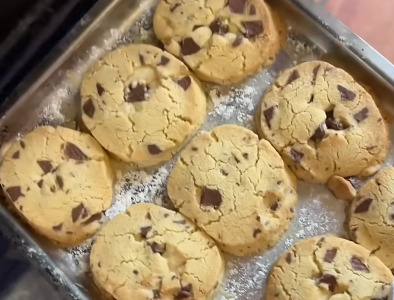

Home
Shortbread

Description
This is a quick and easy shortbread recipe with choco chunks. Total time from start to finish, including baking in the oven, is less than 1 hour. Shortbread is best enjoyed with tea, coffee or milk.
Ingredients
- 100 g granulated sugar
- 200 g butter
- 300 g all purpose flour
- 75g dark chocolate
- pinch of salt
Steps
- In a large bowl, add the flour, sugar and a pinch of salt, then quickly mix the ingredients with a whisk.
-
Add the butter and start mixing and rubbing the ingredients between your hands until they resemble breadrumbs, then press together until it starts to form a dough.
- Tip: If your dough is too crumbly and wont hold together add a teaspoon of water.
- Chop the chocolate, add it to your dough and mix it in until well combined.
-
Tip out the dough onto your work surface, roll it into a sausage shape, then cover and chill in the fridge for 30 minutes.
- Chilling will make it easier to cut the dough and reduce spreading out while baking. However, if you are in a hurry you can skip chilling.
- Take the dough out of the fridge and slice it into pieces, however thick you like.
- Place the pieces onto a lined baking tray and bake at 170 °C until golden brown on the edges (20-25 minutes or 15-20 minutes if you didnt chill your dough).
- Remove from the oven and let the cookies cool on the tray for 10 minutes, then carefully transfer to a wire rack to cool completely.